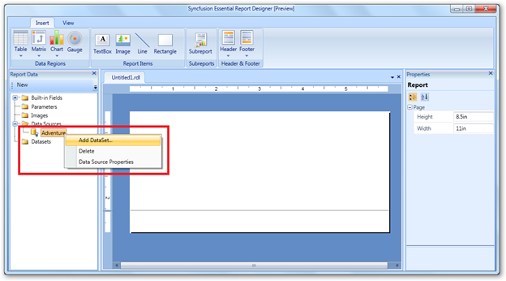
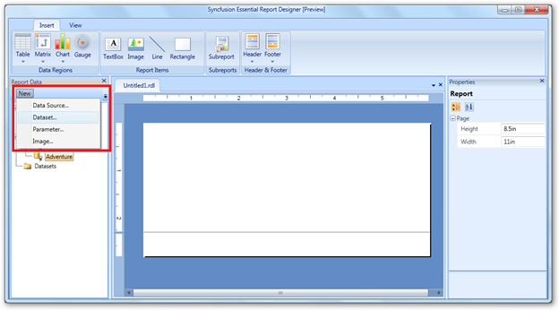
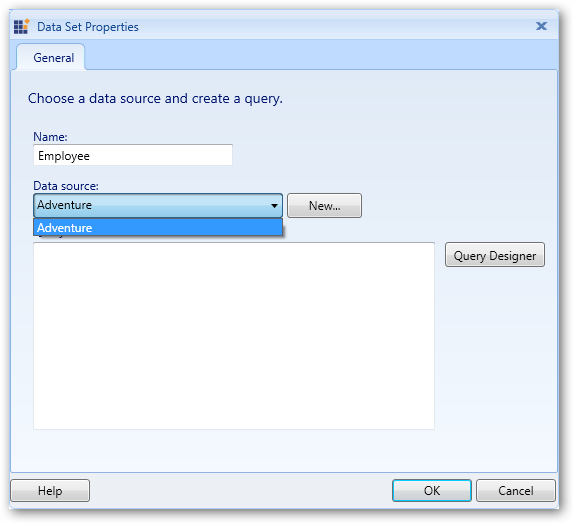
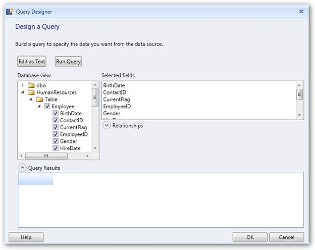
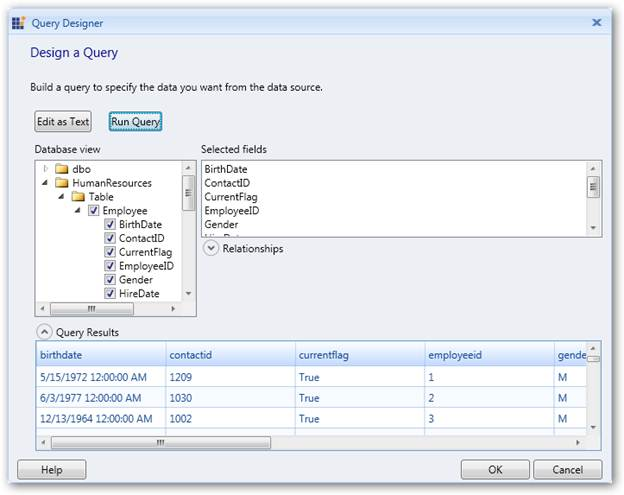
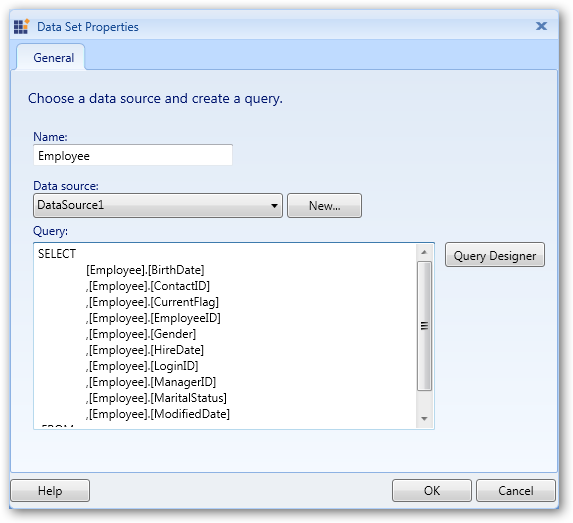
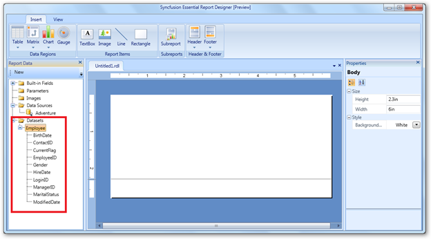

Data set is a collection of data fields. You can add the data set to the corresponding data source in the Report Designer using the following steps.
1. Right-click on the added data source (Adventure) and click Add DataSet.

Figure 13: Add DataSet
 Note: You can also open the Data Set Properties
dialog by clicking New > Data Set.
Note: You can also open the Data Set Properties
dialog by clicking New > Data Set.

Figure 14: Adding a Dataset using New tab
2. Once the Data Set Properties dialog opens, enter a name for the data set in Name field.

Figure 15: Data Set Properties
3. To select the fields manually from the database, click Query Designer. The Query Designer dialog will open.

Figure 16: Query Designer
4. Click Edit as Text to manually write the query to retrieve fields from the database. You can test the query by clicking Run Query.

Figure 17: Edit as Text
5. Click OK to add the query in the Query field.

Figure 18: Query Field
Note: Now, the added data fields will be appeared
under the data set.

Figure 19: Data Set with Data Fields